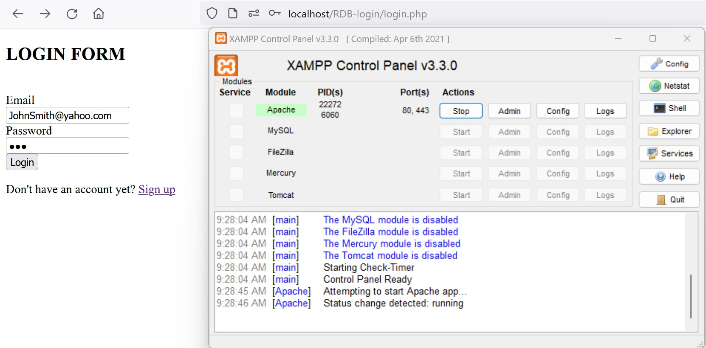
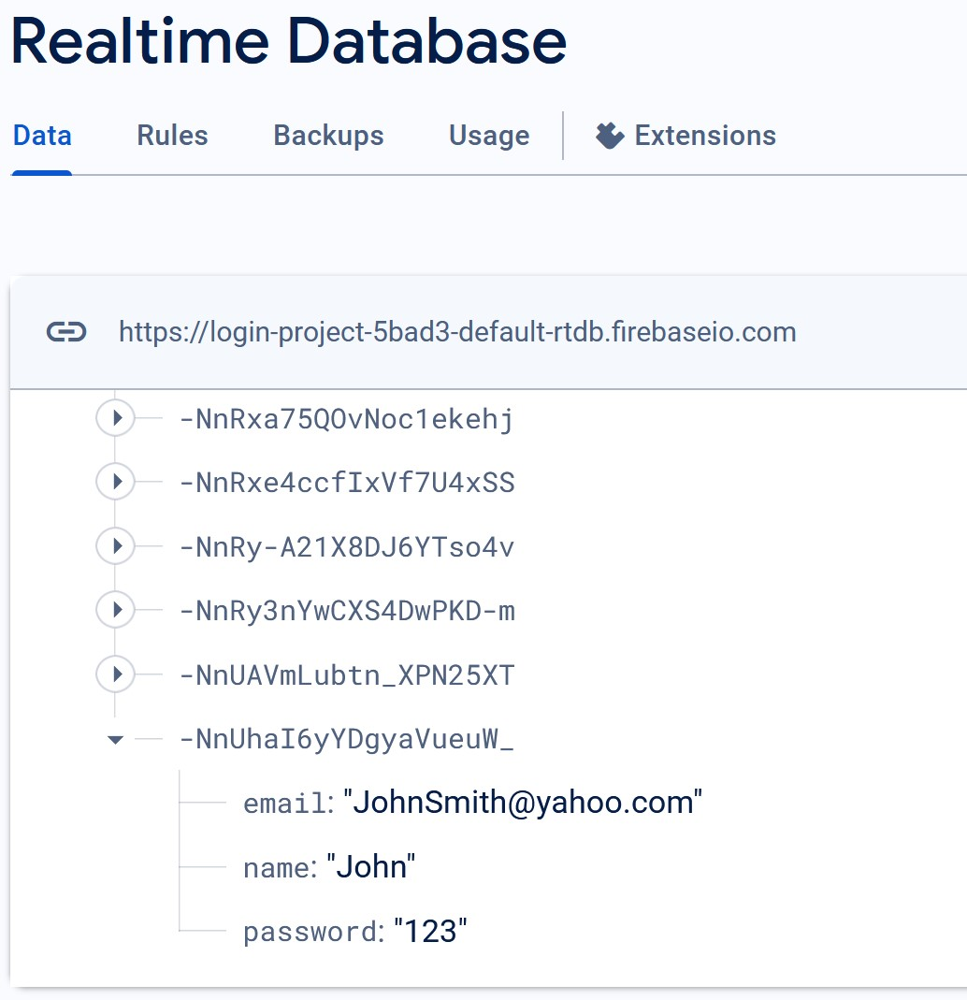

Login Project - PHP with Firebase
1. Introduction:
The project aimed to implement a user authentication system using PHP and Firebase as the backend database. The primary goal was to create a secure and efficient login and signup system for a web application.
2. Methodologies:
- Firebase Database: Utilized Firebase as the backend database for storing user information securely.
- PHP Scripting: Developed server-side scripts using PHP to handle user authentication processes.
- FirebaseRDB Class: Implemented a custom PHP class, FirebaseRDB, to interact with Firebase Realtime Database using cURL.
- User Interface: Created HTML forms for user login and signup, ensuring a user-friendly interface.
3. Relevant Steps/Findings:
3.1 Firebase Configuration:
-
Setup Firebase Project:
Created a new Firebase project to use as the backend for user authentication.
-
Configure Realtime Database:
Configured the Firebase Realtime Database to store user information securely.
-
Acquire Firebase Project URL:
Obtained the Firebase project URL to be used in PHP scripts for database interaction.
3.2 Database Structure:
-
Create Firestore Collection:
Established a Firestore collection to store user information, including fields like username and hashed password.
3.3 Local Testing with XAMPP:
-
Utilize XAMPP:
Used XAMPP as the local development environment for testing and viewing PHP scripts.
-
Configure Local Server:
Configured XAMPP to serve the project locally, enabling seamless testing before deployment.
3.4 Login System:
-
Develop PHP Login Script:
Created a PHP script for user login using Firebase for authentication.
-
Error Handling:
Implemented error handling for empty fields and incorrect login details.
3.5 Signup System:
-
Create PHP Signup Script:
Developed a PHP script for user signup that checks for existing email addresses.
-
Password Hashing:
Implemented password hashing for enhanced security.
3.6 Dashboard Integration:
-
Develop Dashboard Page:
Created a dashboard.php page for authenticated users.
-
Logout Option:
Included a logout option to terminate user sessions.
Code Reference:
For detailed PHP code related to Firebase configuration, user authentication, and other relevant steps, please refer to the following document: PHP Code Reference Document .
Project Screenshot
Project Screenshot
4. Conclusion:
The integration of PHP with Firebase Realtime Database successfully resulted in a functional user authentication system. The project ensured data security by using hashed passwords and demonstrated proficiency in PHP scripting and Firebase database interaction. The created login and signup systems provide a foundation for building secure web applications with user authentication features.
5. Future Enhancements:
- Password Recovery: Implement a password recovery mechanism for users.
- User Profile Management: Extend the system to allow users to update their profile information.
- Enhanced Security Measures: Implement additional security measures, such as two-factor authentication.